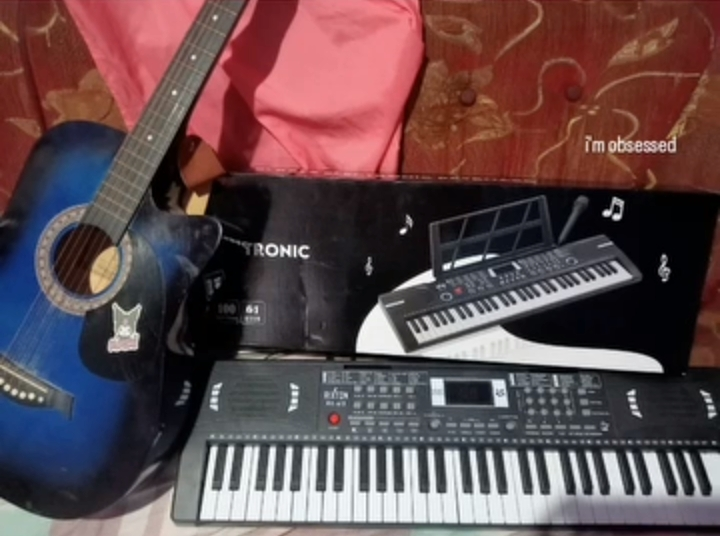
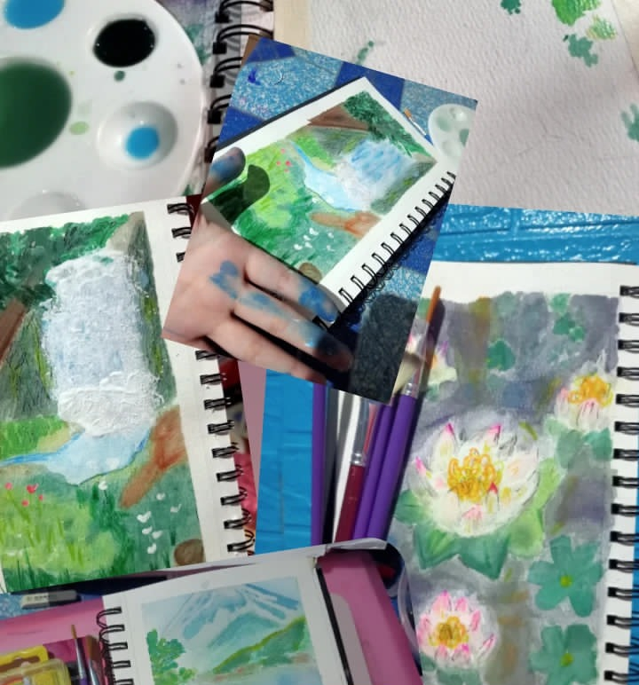
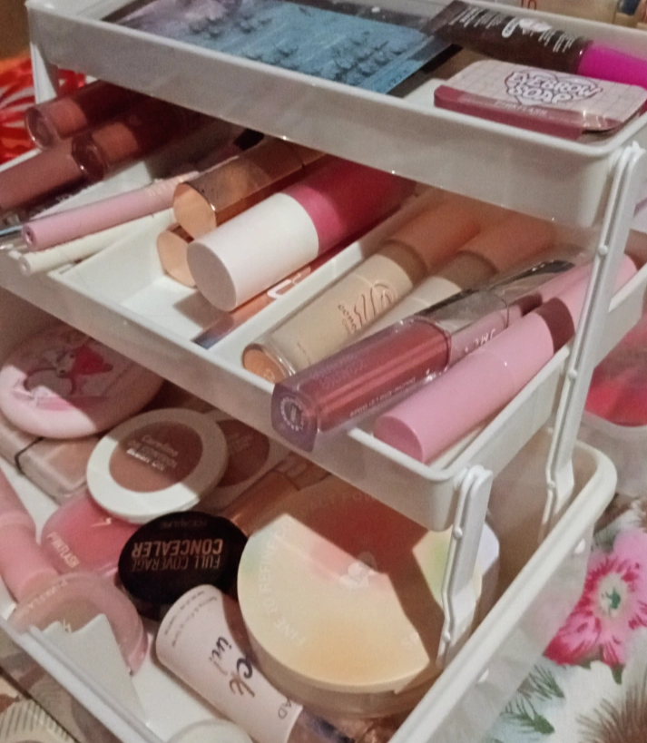

Hello! My name is Mickaella Mira Panaligan 16 year old, I am grade 11 ICT student at Asian Institute of Technology and Education, I aim to accomplish my goal in life, I'm passionate on everything I like. I used to be desperately want to become Psychologist someday therefore ended up being I don't know what I wanted to be, when I graduated grade ten and going to enroll for grade 11, I actually take humss strand at Recto Memorial National High School, I ended up being an ICT student in view of the fact that my dad wants it for me, I pursue being an ICT student since I wanted to fix my relationship with my dad, but ended up there's nothing change, I did just accepted everything, that's life. Even though my strand was actually my weakness, I'll do my best to always had a progress in everything I did. I pray for my teacher to have more patient on me, even though I was a slow learner. I have no regret that I am an ICT student right now, I did my decision for purpose.I know god wouldn't put in the situationion if it wasn't for me.
Playing Musical Instruments
Do Paintings
Do My Make-up
